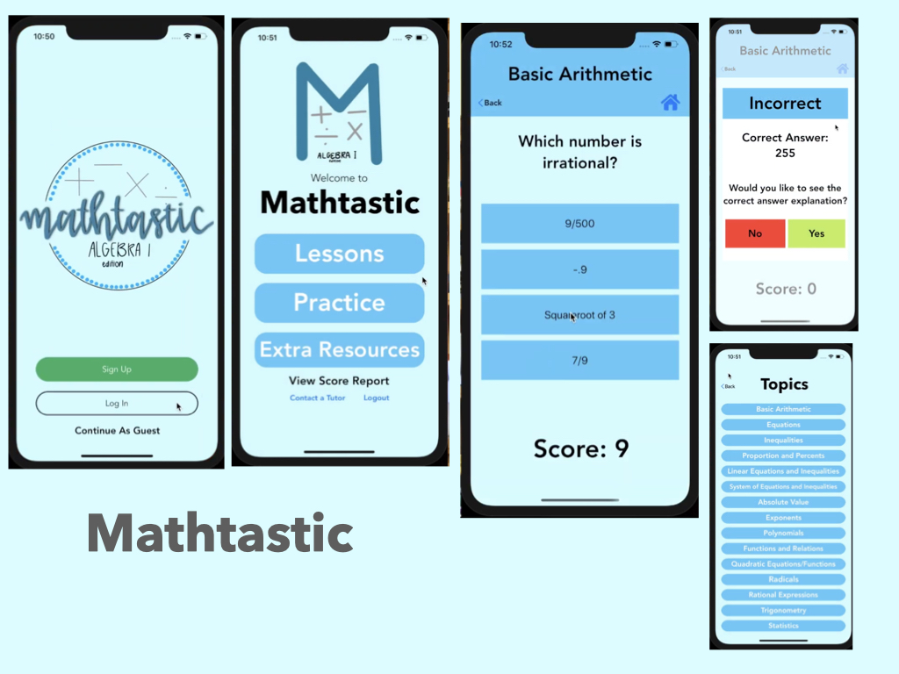

Projects


iRecycle
Made with:
An AI-based iOS Application using Xcode which utilizes a Computer Vision CoreML model to predict if an item is recyclable, organic waste, or trash. Also, assists users in reducing their carbon footprint by calculating their current and providing personalized suggestions to reduce it.



ASL Go
Made with:
iOS application which utilizes Machine Learning and Computer Vision to translate real time ASL feed into English words. Contains learn pages where users can learn common ASL phrases and words.


MADE BY GAURI PALA